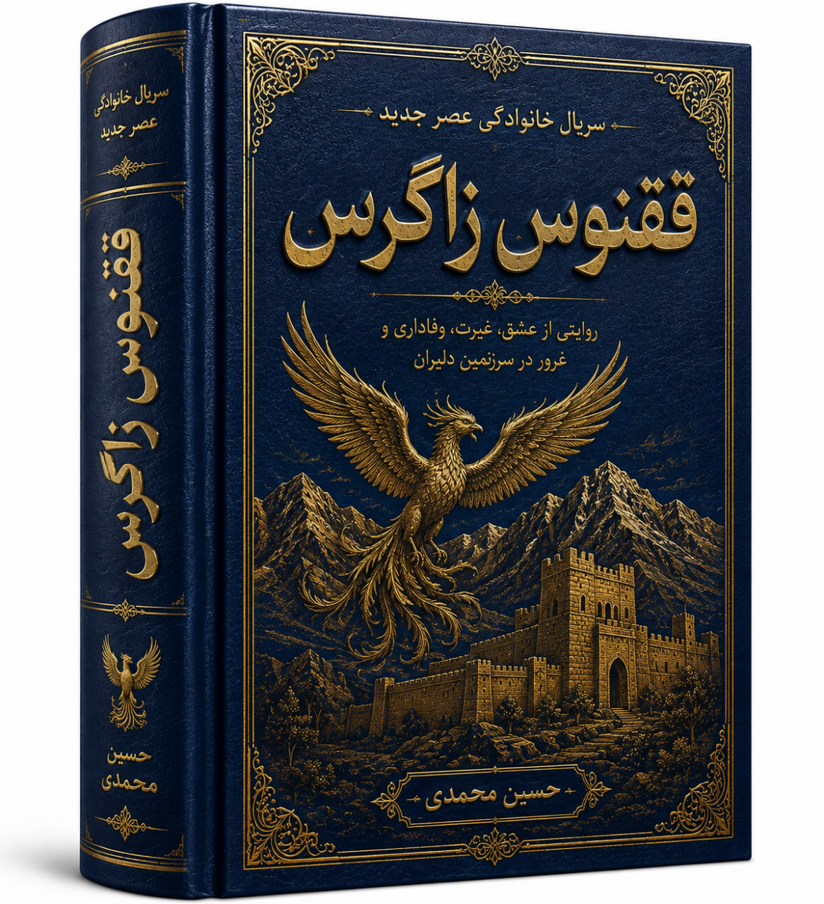

<style>
  [[[ CSS خودتان را اینجا بچسبانید — از فایل فعلی، از خط اول CSS تا آخر CSS ]]]
</style>

<main id="main-content">

  <!-- ===== HERO ===== -->
  <section class="hero" id="home" aria-labelledby="hero-title">
    <div class="hero-bg" aria-hidden="true"></div>

    <div class="container hero-container">
      <div class="hero-content">
        <div class="hero-eyebrow">
          <span class="eyebrow-line"></span>
          <span>وب‌سایت رسمی</span>
          <span class="eyebrow-line"></span>
        </div>

        <p class="hero-pretitle">روایت انسان، <span>در امتداد تاریخ</span></p>

        <h1 id="hero-title">حسین محمدی <span>آمیرزا</span></h1>

        <h2>نویسنده، شاعر، پژوهشگر تاریخ <span>و فیلمنامه‌نویس</span></h2>

        <p class="hero-lead">اینجا خانه‌ی روایت است؛ جایی میان واژه، تاریخ و تصویر، برای آثاری که از گذشته می‌پرسند، از انسان می‌نویسند و به آینده نگاه می‌کنند.</p>

        <p class="hero-description">مجموعه‌ای از کتاب‌ها، پژوهش‌های تاریخی، فیلمنامه‌ها، آثار نمایشی و نوشته‌هایی که بخشی از مسیر فکری و ادبی حسین محمدی آمیرزا را شکل داده‌اند.</p>

        <div class="hero-actions">
          <a href="#books" class="btn btn-primary"><span>ورود به کتابخانه</span><span class="btn-arrow" aria-hidden="true">←</span></a>
          <a href="#about" class="btn btn-ghost">آشنایی با نویسنده</a>
        </div>

        <div class="hero-meta">
          <div class="hero-meta-item"><span class="meta-number">۰۱</span><span>ادبیات</span></div>
          <div class="hero-meta-item"><span class="meta-number">۰۲</span><span>تاریخ</span></div>
          <div class="hero-meta-item"><span class="meta-number">۰۳</span><span>سینما</span></div>
          <div class="hero-meta-item"><span class="meta-number">۰۴</span><span>روایت</span></div>
        </div>
      </div>

      <div class="hero-visual">
        <div class="portrait-wrapper">
          <div class="portrait-shadow" aria-hidden="true"></div>
          <div class="portrait-border">
            <div class="portrait-image">
              
            </div>
          </div>
          <div class="portrait-seal" aria-hidden="true">ح</div>
        </div>
        <div class="portrait-caption">
          <span>حسین محمدی آمیرزا</span>
          <small>نویسنده · شاعر · پژوهشگر · فیلمنامه‌نویس</small>
        </div>
      </div>
    </div>

    <a href="#about" class="hero-scroll" aria-label="رفتن به بخش درباره نویسنده">
      <span>کشف داستان</span>
      <i aria-hidden="true"></i>
    </a>
  </section>

  <!-- ===== IDENTITY STRIP ===== -->
  <section class="identity-strip" aria-label="حوزه‌های فعالیت">
    <div class="container identity-grid">
      <div class="identity-item"><span class="identity-index">۰۱</span><div><strong>ادبیات</strong><span>شعر و آثار مکتوب</span></div></div>
      <div class="identity-item"><span class="identity-index">۰۲</span><div><strong>تاریخ</strong><span>پژوهش و روایت گذشته</span></div></div>
      <div class="identity-item"><span class="identity-index">۰۳</span><div><strong>سینما</strong><span>فیلمنامه و آثار نمایشی</span></div></div>
      <div class="identity-item"><span class="identity-index">۰۴</span><div><strong>اندیشه</strong><span>یادداشت و پژوهش</span></div></div>
    </div>
  </section>

  <!-- ===== MANIFESTO ===== -->
  <section class="manifesto-section" aria-labelledby="manifesto-title">
    <div class="container manifesto-grid">
      <div class="manifesto-label"><span>روایت</span><strong>۰۰</strong></div>
      <div class="manifesto-content">
        <p class="manifesto-kicker">هر اثر، تلاشی برای فهم انسان است.</p>
        <h2 id="manifesto-title">گذشته فقط چیزی نیست که پشت سر گذاشته‌ایم؛ <em>چیزی است که هنوز با ما زندگی می‌کند.</em></h2>
        <p>تاریخ، ادبیات و سینما سه راه متفاوت برای نزدیک شدن به یک پرسش مشترک‌اند: انسان چگونه زیسته، چه چیزی را باور کرده، برای چه چیزی جنگیده و چه چیزی را برای نسل‌های بعد به یادگار گذاشته است؟</p>
      </div>
    </div>
  </section>

  <!-- ===== STATS ===== -->
  <section class="stats-section" aria-label="نمای کلی آثار">
    <div class="container stats-grid">
      <div class="stat-item"><span class="stat-number" data-count="6">۰</span><span class="stat-label">کتاب</span></div>
      <div class="stat-item"><span class="stat-number" data-count="9">۰</span><span class="stat-label">فیلمنامه</span></div>
      <div class="stat-item"><span class="stat-number" data-count="7">۰</span><span class="stat-label">اثر نمایشی</span></div>
      <div class="stat-item"><span class="stat-number" data-count="4">۰</span><span class="stat-label">نوشته</span></div>
    </div>
  </section>

  <!-- ===== ABOUT ===== -->
  <section class="section about-section" id="about" aria-labelledby="about-title">
    <div class="container">
      <div class="section-heading section-heading-split">
        <div>
          <span class="section-kicker">درباره نویسنده</span>
          <h2 id="about-title">میان واژه، <em>تاریخ</em> و تصویر</h2>
          <p>مسیری میان پژوهش، ادبیات و روایت</p>
        </div>
        <div class="section-index">۰۱</div>
      </div>

      <div class="about-layout">
        <div class="about-main">
          <p class="about-lead">حسین محمدی آمیرزا نویسنده، شاعر، پژوهشگر تاریخ و فیلمنامه‌نویس است؛ نویسنده‌ای که بخشی از مسیر فکری و ادبی خود را در جست‌وجوی انسان، تاریخ و معنا دنبال کرده است.</p>
          <p>در این نگاه، تاریخ فقط مجموعه‌ای از تاریخ‌ها، نام‌ها و رویدادها نیست. تاریخ، حافظه‌ی انسان است؛ ردپای تصمیم‌ها، امیدها، شکست‌ها، پیروزی‌ها و زندگی انسان‌هایی که پیش از ما در این جهان زیسته‌اند.</p>
          <p>پژوهش تاریخی برای او فرصتی است برای بازخوانی گذشته و نزدیک شدن به واقعیت انسان‌هایی که در دل آن گذشته زندگی کرده‌اند.</p>
          <p>ادبیات اما زبان دیگری برای این جست‌وجو فراهم می‌کند؛ زبانی که در آن واقعیت و تخیل، گذشته و امروز، انسان و روایت می‌توانند در کنار یکدیگر قرار بگیرند.</p>
          <p>فیلمنامه نیز ادامه‌ی همین مسیر است: تبدیل اندیشه و روایت به تصویر، شخصیت، موقعیت و لحظه‌هایی که می‌توانند روی پرده جان بگیرند.</p>
          <a href="#books" class="text-link">ورود به جهان آثار <span aria-hidden="true">←</span></a>
        </div>

        <aside class="about-profile">
          <div class="profile-monogram">ح</div>
          <div class="profile-heading"><span>پرونده نویسنده</span><h3>حسین محمدی آمیرزا</h3></div>
          <div class="profile-divider"></div>
          <dl class="profile-details">
            <div><dt>حوزه فعالیت</dt><dd>ادبیات، تاریخ، فرهنگ و سینما</dd></div>
            <div><dt>قالب آثار</dt><dd>کتاب، شعر، پژوهش، فیلمنامه و مجموعه نمایشی</dd></div>
            <div><dt>دغدغه</dt><dd>انسان در بستر تاریخ و روایت</dd></div>
            <div><dt>رویکرد</dt><dd>پژوهش، روایت و بازخوانی گذشته</dd></div>
          </dl>
          <div class="profile-footer"><span>OFFICIAL ARCHIVE</span><span>H.M.A</span></div>
        </aside>
      </div>
    </div>
  </section>

  <!-- ===== QUOTE ===== -->
  <section class="quote-section" aria-labelledby="quote-title">
    <div class="quote-bg-pattern" aria-hidden="true"></div>
    <div class="container quote-inner">
      <div class="quote-mark" aria-hidden="true">«</div>
      <span class="section-kicker">نگاه نویسنده</span>
      <h2 id="quote-title">تاریخ؛ حافظه زنده انسان‌ها</h2>
      <blockquote>آنچه روایت نشود، در گذر زمان خاموش می‌شود؛ و آنچه با صداقت روایت شود، می‌تواند به بخشی از حافظه یک ملت بدل شود.</blockquote>
      <div class="quote-author"><span></span><small>حسین محمدی آمیرزا</small><span></span></div>
    </div>
  </section>

  <!-- ===== BOOKS ===== -->
  <section class="section books-section" id="books" aria-labelledby="books-title">
    <div class="container">
      <div class="section-heading section-heading-split">
        <div>
          <span class="section-kicker">کتابخانه آثار</span>
          <h2 id="books-title">کتاب‌ها و آثار مکتوب</h2>
          <p>بخشی از آثار ادبی، پژوهشی و فکری نویسنده</p>
        </div>
        <div class="section-index">۰۲</div>
      </div>

      <div class="books-grid">
        <a href="books/tarikh-adyan.html" class="book-card">
          <div class="book-cover">
            
            <div class="book-overlay"><span>مشاهده اثر</span><strong>←</strong></div>
            <span class="book-number">۰۱</span>
          </div>
          <div class="book-info"><span class="book-type">پژوهش</span><h3>تاریخ ادیان</h3><p>هفتاد هزار سال انسان در جست‌وجوی معنا</p></div>
        </a>

        <a href="books/faraz-va-forud.html" class="book-card">
          <div class="book-cover">
            
            <div class="book-overlay"><span>مشاهده اثر</span><strong>←</strong></div>
            <span class="book-number">۰۲</span>
          </div>
          <div class="book-info"><span class="book-type">تاریخ</span><h3>فراز و فرود سرنوشت قوم زند</h3><p>پژوهشی در تاریخ و سرگذشت قوم زند</p></div>
        </a>

        <a href="books/ghoghnoos-ashegh.html" class="book-card">
          <div class="book-cover">
            
            <div class="book-overlay"><span>مشاهده اثر</span><strong>←</strong></div>
            <span class="book-number">۰۳</span>
          </div>
          <div class="book-info"><span class="book-type">ادبیات</span><h3>ققنوس عاشق</h3><p>اثری ادبی درباره عشق، انسان و زندگی</p></div>
        </a>

        <a href="books/honar-razm.html" class="book-card">
          <div class="book-cover">
            
            <div class="book-overlay"><span>مشاهده اثر</span><strong>←</strong></div>
            <span class="book-number">۰۴</span>
          </div>
          <div class="book-info"><span class="book-type">پژوهش تاریخی</span><h3>هنر رزم ایرانیان</h3><p>پژوهشی درباره تاریخ و فرهنگ رزم ایرانیان</p></div>
        </a>

        <a href="books/tarikh-adyan-jeld-2.html" class="book-card">
          <div class="book-cover">
            
            <div class="book-overlay"><span>مشاهده اثر</span><strong>←</strong></div>
            <span class="book-number">۰۵</span>
          </div>
          <div class="book-info"><span class="book-type">اندیشه</span><h3>روانشناسی انسان در عصر حیرت</h3><p>پژوهشی درباره انسان، ذهن و اندیشه</p></div>
        </a>

        <a href="books/golshan.html" class="book-card">
          <div class="book-cover">
            
            <div class="book-overlay"><span>مشاهده اثر</span><strong>←</strong></div>
            <span class="book-number">۰۶</span>
          </div>
          <div class="book-info"><span class="book-type">ادبی و معنوی</span><h3>گلشنی از قرآن کریم</h3><p>گزیده‌ای با رویکرد ادبی و معنوی</p></div>
        </a>
      </div>

      <div class="section-closing"><span>این کتابخانه همچنان در حال گسترش است.</span><span class="closing-line"></span><span>آثار تازه در راه‌اند.</span></div>
    </div>
  </section>

  <!-- ===== FEATURED ===== -->
  <section class="featured-work" aria-labelledby="featured-title">
    <div class="container featured-grid">
      <div class="featured-cover">
        <div class="featured-frame">
          
        </div>
      </div>
      <div class="featured-content">
        <span class="section-kicker">اثر شاخص</span>
        <span class="featured-number">۰۱</span>
        <h2 id="featured-title">تاریخ ادیان</h2>
        <h3>هفتاد هزار سال انسان در جست‌وجوی معنا</h3>
        <p>از نخستین نشانه‌های معنویت تا شکل‌گیری نظام‌های اعتقادی؛ تاریخ ادیان را می‌توان بخشی از تاریخ جست‌وجوی انسان برای فهم جهان، زندگی و جایگاه خویش دانست.</p>
        <p>این اثر تلاشی است برای نگاه کردن به ادیان نه فقط به‌عنوان مجموعه‌ای از باورها، بلکه به‌عنوان بخشی از داستان بزرگ انسان؛ داستانی که در طول هزاران سال ادامه یافته است.</p>
        <a href="books/tarikh-adyan.html" class="btn btn-primary"><span>ورود به صفحه کتاب</span><span aria-hidden="true">←</span></a>
      </div>
    </div>
  </section>

  <!-- ===== SCREENPLAYS ===== -->
  <section class="section screenplay-section" id="screenplays" aria-labelledby="screenplays-title">
    <div class="container">
      <div class="section-heading section-heading-split">
        <div>
          <span class="section-kicker">سینما و تصویر</span>
          <h2 id="screenplays-title">فیلمنامه‌ها</h2>
          <p>روایت‌هایی که برای دیده شدن نوشته شده‌اند</p>
        </div>
        <div class="section-index">۰۳</div>
      </div>

      <div class="screenplay-grid">
        <a href="screenplays/akharin-nabard-sorena.html" class="screenplay-card">
          <div class="screenplay-cover">
            
            <span>۰۱</span>
          </div>
          <div class="screenplay-info"><small>فیلمنامه بلند</small><h3>آخرین نبرد سورنا</h3><p>روایتی تاریخی از نبرد و سرنوشت</p></div>
        </a>

        <a href="screenplays/miras-atesh.html" class="screenplay-card">
          <div class="screenplay-cover">
            
            <span>۰۲</span>
          </div>
          <div class="screenplay-info"><small>فیلمنامه بلند</small><h3>سه‌گانه میراث آتش</h3><p>روایتی درباره تاریخ، میراث و انسان</p></div>
        </a>

        <a href="screenplays/dej-shirzanan.html" class="screenplay-card">
          <div class="screenplay-cover">
            
            <span>۰۳</span>
          </div>
          <div class="screenplay-info"><small>فیلمنامه بلند</small><h3>دژ شیرزنان</h3><p>روایتی تاریخی از ایستادگی و مقاومت</p></div>
        </a>

        <a href="screenplays/darookhane-hakim.html" class="screenplay-card">
          <div class="screenplay-cover">
            
            <span>۰۴</span>
          </div>
          <div class="screenplay-info"><small>فیلمنامه بلند</small><h3>داروخانه حکیم</h3><p>روایتی انسانی در فضای تاریخی</p></div>
        </a>

        <a href="series/cheragh-rah/index.html" class="screenplay-card">
          <div class="screenplay-cover">
            
            <span>۰۵</span>
          </div>
          <div class="screenplay-info"><small>فیلمنامه کوتاه</small><h3>چراغ راه</h3><p>روایتی درباره انتخاب و امید</p></div>
        </a>

        <a href="series/atr-shirin/index.html" class="screenplay-card">
          <div class="screenplay-cover">
            
            <span>۰۶</span>
          </div>
          <div class="screenplay-info"><small>فیلمنامه کوتاه</small><h3>عطر شیرین</h3><p>روایتی انسانی و عاطفی</p></div>
        </a>

        <a href="series/maro-koozeh/index.html" class="screenplay-card">
          <div class="screenplay-cover">
            
            <span>۰۷</span>
          </div>
          <div class="screenplay-info"><small>فیلمنامه کوتاه</small><h3>کوزه و مار</h3><p>روایتی تلخ و نمادین درباره تشنگی، قدرت و تقسیم</p></div>
        </a>

        <a href="screenplays/baran-va-sang.html" class="screenplay-card">
          <div class="screenplay-cover">
            
            <span>۰۸</span>
          </div>
          <div class="screenplay-info"><small>فیلم‌نامه کوتاه</small><h3>باران و سنگ</h3><p>روایتی شاعرانه و انسانی</p></div>
        </a>

        <a href="series/series/sor-o-sat/index.html" class="screenplay-card">
          <div class="screenplay-cover">
            
            <span>۰۹</span>
          </div>
          <div class="screenplay-info"><small>فیلمنامه کوتاه</small><h3>سور و سات</h3><p>روایتی طنزآمیز و انسانی درباره خانواده و انسانیت</p></div>
        </a>
      </div>
    </div>
  </section>

  <!-- ===== SERIES ===== -->
  <section class="section series-section" id="series" aria-labelledby="series-title">
    <div class="container">
      <div class="section-heading section-heading-split">
        <div>
          <span class="section-kicker">جهان نمایش</span>
          <h2 id="series-title">سریال‌ها و مجموعه‌های نمایشی</h2>
          <p>داستان‌هایی برای پرده، صفحه و حافظه</p>
        </div>
        <div class="section-index">۰۴</div>
      </div>

      <div class="series-intro">
        <p>بعضی داستان‌ها در یک کتاب تمام نمی‌شوند. شخصیت‌ها و جهان‌هایی وجود دارند که برای ادامه یافتن، به تصویر، زمان و زندگی روی پرده نیاز دارند.</p>
      </div>

      <div class="series-list">
        <a href="series/dehopadan/index.html" class="series-item">
          <span class="series-number">۰۱</span>
          <div class="series-cover"></div>
          <div class="series-content"><h3>دهوپادان</h3><p>سریال سی قسمتی</p></div>
          <span class="series-arrow" aria-hidden="true">↙</span>
        </a>

        <a href="series/ghoghnoos-zagros/index.html" class="series-item">
          <span class="series-number">۰۲</span>
          <div class="series-cover"></div>
          <div class="series-content"><h3>ققنوس زاگرس</h3><p>سریال سی قسمتی</p></div>
          <span class="series-arrow" aria-hidden="true">↙</span>
        </a>

        <a href="series/bazi-sarnevesht-ghom-zand/index.html" class="series-item">
          <span class="series-number">۰۳</span>
          <div class="series-cover"></div>
          <div class="series-content"><h3>بازی سرنوشت قوم زند</h3><p>مجموعه نمایشی تاریخی</p></div>
          <span class="series-arrow" aria-hidden="true">↙</span>
        </a>

        <a href="series/hamase-zandian/index.html" class="series-item">
          <span class="series-number">۰۴</span>
          <div class="series-cover"></div>
          <div class="series-content"><h3>حماسه زندیان</h3><p>سریال تاریخی</p></div>
          <span class="series-arrow" aria-hidden="true">↙</span>
        </a>

        <a href="series/mard-sade-del-roosta/index.html" class="series-item">
          <span class="series-number">۰۵</span>
          <div class="series-cover"></div>
          <div class="series-content"><h3>مرد ساده‌دل روستا</h3><p>مجموعه نمایشی</p></div>
          <span class="series-arrow" aria-hidden="true">↙</span>
        </a>

        <article class="series-item">
          <span class="series-number">۰۶</span>
          <div class="series-content"><h3>تولدی دوباره</h3><p>مجموعه نمایشی</p></div>
          <span class="series-arrow" aria-hidden="true">↙</span>
        </article>

        <article class="series-item">
          <span class="series-number">۰۷</span>
          <div class="series-content"><h3>برخاستن شیران زند</h3><p>مجموعه نمایشی</p></div>
          <span class="series-arrow" aria-hidden="true">↙</span>
        </article>
      </div>
    </div>
  </section>

  <!-- ===== POEMS GATEWAY ===== -->
  <section class="poems-gateway" id="poems" aria-labelledby="poemsTitle">
    <div class="poems-particles" id="poemsParticles" aria-hidden="true"></div>

    <div class="poems-gateway-inner">
      <div class="poems-kicker"><span>دفتر شعر</span></div>

      <h2 class="poems-gateway-title" id="poemsTitle">
        اشعار حسین محمدی آمیرزا
        <span>واژه‌هایی که از دل تاریخ، عشق و انسان برآمده‌اند</span>
      </h2>

      <div class="poems-divider" aria-hidden="true">
        <span class="poems-divider-line"></span>
        <span class="poems-divider-mark">✦</span>
        <span class="poems-divider-line"></span>
      </div>

      <div class="poem-showcase">
        <div class="poem-showcase-card" id="poemShowcaseCard">
          <h3 class="poem-showcase-title" id="poemShowcaseTitle">
            <span class="poem-showcase-loading">در حال گشودن دفتر شعر...</span>
          </h3>
          <p class="poem-showcase-text" id="poemShowcaseText">
            <span class="poem-showcase-loading">لطفاً کمی صبر کنید...</span>
          </p>
          <div class="poem-showcase-meta">
            <span class="poem-showcase-number" id="poemShowcaseNumber"></span>
            <span class="poem-showcase-source" id="poemShowcaseSource"></span>
          </div>
        </div>
      </div>

      <nav class="poems-actions" aria-label="مسیرهای شعر">
        <a class="poem-action poem-action-primary" href="poems/index.html" aria-label="ورود به فهرست اشعار">
          <span>ورود به دفتر شعر</span>
          <span aria-hidden="true">←</span>
        </a>
        <button type="button" class="poem-action" id="poemRandomBtn" aria-label="نمایش یک شعر تصادفی">
          <span aria-hidden="true">🎲</span>
          <span>شعر تصادفی</span>
        </button>
      </nav>

      <div class="poems-filters" id="poemsFilters" role="group" aria-label="فیلتر موضوعی اشعار">
        <button type="button" class="poem-filter-btn is-active" data-filter="all">همه</button>
        <button type="button" class="poem-filter-btn" data-filter="عاشقانه">عاشقانه</button>
        <button type="button" class="poem-filter-btn" data-filter="تاریخی">تاریخی</button>
        <button type="button" class="poem-filter-btn" data-filter="مذهبی">مذهبی</button>
        <button type="button" class="poem-filter-btn" data-filter="اجتماعی">اجتماعی</button>
        <button type="button" class="poem-filter-btn" data-filter="طبیعت">طبیعت</button>
      </div>

      <div class="poems-search">
        <span class="poems-search-icon" aria-hidden="true">🔍</span>
        <input type="search" id="poemsSearchInput" placeholder="جست‌وجو در عنوان یا متن اشعار..." aria-label="جست‌وجو در اشعار">
      </div>
    </div>
  </section>

  <!-- ===== POEMS GRID ===== -->
  <section class="poems-grid-section" id="poemsGridSection" aria-labelledby="poemsGridTitle">
    <div class="container">
      <div class="section-heading section-heading-split">
        <div>
          <span class="section-kicker">گزیده اشعار</span>
          <h2 id="poemsGridTitle">از دفترهای شعری</h2>
          <p>نگاهی به بخشی از سروده‌ها</p>
        </div>
        <div class="section-index">۰۵</div>
      </div>

      <div class="poems-grid" id="poemsGrid" aria-live="polite"></div>

      <div class="poems-grid-closing">
        <span>دفتر شعر همچنان گشوده است.</span>
        <span class="closing-line"></span>
        <span>سروده‌های تازه در راه‌اند.</span>
      </div>
    </div>
  </section>

  <!-- ===== PHILOSOPHY ===== -->
  <section class="philosophy-section" aria-labelledby="philosophy-title">
    <div class="container philosophy-grid">
      <div class="philosophy-label"><span>اندیشه</span><strong>۰۶</strong></div>
      <div class="philosophy-content">
        <span class="section-kicker">جهان فکری آثار</span>
        <h2 id="philosophy-title">روایت، فقط بازگویی گذشته نیست؛ <em>راهی برای فهم امروز است.</em></h2>
        <p>در میان تاریخ، ادبیات و سینما، یک عنصر مشترک وجود دارد: انسان. انسانی که در زمان زندگی می‌کند، انتخاب می‌کند، می‌ترسد، امیدوار می‌شود، می‌جنگد، شکست می‌خورد و دوباره از نو آغاز می‌کند.</p>
      </div>
    </div>
  </section>

  <!-- ===== NEW WORK ===== -->
  <section class="new-work-section" aria-labelledby="new-work-title">
    <div class="container">
      <div class="new-work-content">
        <span class="section-kicker">در مسیر خلق</span>
        <h2 id="new-work-title">داستان‌ها هنوز ادامه دارند...</h2>
        <p>هیچ آرشیوی پایان یک مسیر نیست. بخشی از هر زندگی ادبی و پژوهشی در آثاری نوشته می‌شود که هنوز به پایان نرسیده‌اند. این بخش جایگاه پروژه‌ها، کتاب‌های تازه، پژوهش‌های جدید، فیلمنامه‌ها و ایده‌هایی است که در ادامه این مسیر شکل خواهند گرفت.</p>
        <div class="new-work-items">
          <div class="new-work-item"><span>۰۱</span><div><strong>کتاب‌های تازه</strong><small>در حال نگارش و آماده‌سازی</small></div></div>
          <div class="new-work-item"><span>۰۲</span><div><strong>پژوهش‌های جدید</strong><small>تاریخ، فرهنگ و انسان</small></div></div>
          <div class="new-work-item"><span>۰۳</span><div><strong>آثار نمایشی</strong><small>فیلمنامه و سریال</small></div></div>
        </div>
      </div>
    </div>
  </section>

  <!-- ===== CONTACT ===== -->
  <section class="section contact-section" id="contact" aria-labelledby="contact-title">
    <div class="container">
      <div class="section-heading">
        <span class="section-kicker">ارتباط</span>
        <h2 id="contact-title">با نویسنده در ارتباط باشید</h2>
        <p>برای گفت‌وگو، همکاری، پیشنهاد یا پرسش درباره آثار</p>
      </div>

      <div class="contact-layout">
        <div class="contact-message">
          <div class="contact-symbol" aria-hidden="true">ح</div>
          <span class="contact-kicker">یک گفت‌وگو می‌تواند آغاز یک روایت تازه باشد.</span>
          <h3>خانه‌ای برای گفت‌وگو</h3>
          <p>اگر درباره کتاب‌ها، پژوهش‌ها، فیلمنامه‌ها، اشعار یا دیگر آثار پرسشی دارید، یا برای همکاری و گفت‌وگو درباره یک پروژه مایل به ارتباط هستید، می‌توانید از راه‌های زیر با نویسنده در تماس باشید.</p>

          <div style="margin-top: 25px; display: flex; flex-wrap: wrap; gap: 12px;">
            <a href="comments.html" style="display: inline-block; padding: 12px 26px; border-radius: 10px; background: #4d3b28; color: #ffffff; text-decoration: none; font-weight: 700;">دیدگاه مخاطبان</a>
            <a href="poems/index.html" style="display: inline-block; padding: 12px 26px; border-radius: 10px; background: transparent; border: 1px solid #b78a3b; color: #b78a3b; text-decoration: none; font-weight: 700;">ورود به دفتر شعر</a>
          </div>
        </div>

        <div class="contact-details">
          <div class="contact-item">
            <span>ایمیل</span>
            <a href="mailto:hosseinmohammadi.writer@gmail.com">hosseinmohammadi.writer@gmail.com</a>
          </div>
          <div class="contact-item">
            <span>تلفن</span>
            <a href="tel:09199379791">۰۹۱۹۹۳۷۹۷۹۱</a>
          </div>
          <div class="contact-item">
            <span>محل</span>
            <strong>پاکدشت، روبه‌روی دانشگاه ابو ریحان</strong>
          </div>
        </div>
      </div>
    </div>
  </section>

</main>
